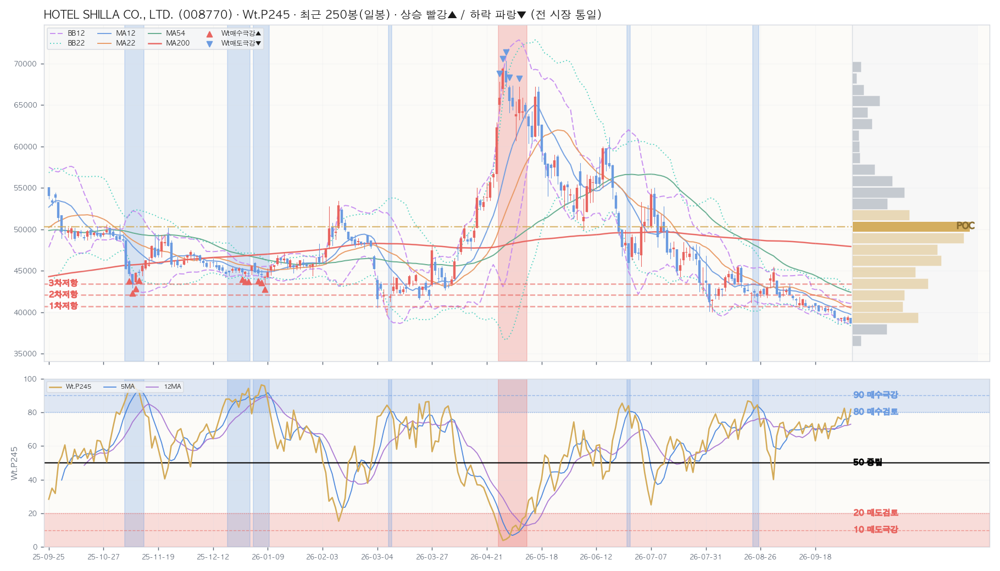

| 레벨 | 가격대 | 현재가 대비 | 거래비중 |
|---|---|---|---|
| ▲ 저항 1차 | 40,028~41,404 | +5.2% | 4.7% |
| ▲ 저항 2차 | 41,404~42,780 | +8.8% | 4.9% |
| ▲ 저항 3차 | 42,780~44,156 | +12.3% | 7.1% |
| ▼ 지지 — | 유효 매물대 없음 | ||
| 지표 | D 일봉 | W 주봉 | M 월봉 |
|---|---|---|---|
| Close | 38,700 | 38,700 | 38,700 |
| Chg% | ▼ -1.78% | ▼ -1.53% | ▼ -1.65% |
| SigNm | 82.0 | 89.7 | 90.5 |
| SigRk | 84.7 | 87.7 | 83.6 |
| PvN2 | -9 | -6 | -5 |
| WtAll | 81 | 67 | 95 |
nix_snapshot_market_temp_kr.json (2026-10-08 · 읽기 전용 크로스 참조)| Perf | Mac | Tcr.U | Tcr.D | Zc | BBs | PvN2 | Sts | Wt.P245 | SA.P245 | SA02.P245 | S122.P245 | S051.P245 | SU31.P245 | Inds.Sig | ||||||||||||||||||||||||||||||||||||||||||||||||||
|---|---|---|---|---|---|---|---|---|---|---|---|---|---|---|---|---|---|---|---|---|---|---|---|---|---|---|---|---|---|---|---|---|---|---|---|---|---|---|---|---|---|---|---|---|---|---|---|---|---|---|---|---|---|---|---|---|---|---|---|---|---|---|---|---|
| SigNm | SigRk | |||||||||||||||||||||||||||||||||||||||||||||||||||||||||||||||
| Date | T-Set | H | L | C | V | Chg% | DChg% | YTD | P5 | P12 | P16 | P22 | P54 | P120 | P245 | Cdl | 종합 | 단 | 중 | 장 | 5 | 12 | 22 | 54 | 5 | 12 | 22 | 54 | 12 | 22 | 54 | 12 | 22 | 54 | D | MA_Sts | C_Sts | EMC_Sts | .P | .J | Bar(P) | Ar | .P | .J | Bar(P) | Ar | .P | .J | Bar(P) | Ar | .P | .J | Bar(P) | Ar | .P | .J | Bar(P) | Ar | .P | .J | Bar(P) | Ar | D | D |
| 2026-10-08 | KS200 | 39,350 | 38,650 | 38,700 | 151.6K | -1.8 | +0.0 | -15.0 | -1.7 | -4.8 | -5.8 | -7.4 | -13.9 | -22.8 | -22.1 | 11 | -6 | -1 | -7 | -7 | 0.1 | 0.1 | 0.1 | 0.2 | 0.3 | 1.2 | 2.6 | 6.3 | -1.6 | -1.7 | -1.7 | 0 | 0 | 0 | -9 | 🟦🟥🟦🟦🟦🟦🟦🟦 | 🟦🟦🟦🟦🟦🟦🟦🟦 | 🟦🟦🟦🟦🟦🟦🟦🟦 | 81.7 | 🟦 | ██████████ | ▲ | 95.0 | 🅿️ | ████████████ | ▲ | 62.2 | 🔷 | ████████ | ▲ | 97.2 | ✅ | ████████████ | ▲ | 66.6 | 🔷 | ████████ | ▲ | 3.3 | ⛔ | ▲ | 82.0 | 84.7 | |
| 2026-10-07 | KS200 | 39,600 | 38,900 | 39,400 | 152.1K | +1.2 | -1.8 | -13.5 | -2.0 | -2.8 | -4.9 | -6.5 | -17.6 | -19.5 | -23.3 | -6 | -9 | 7 | -11 | -7 | 0.3 | 0.3 | 0.3 | 0.4 | 0.5 | 0.9 | 2.5 | 5.9 | -0.8 | -1.2 | -1.4 | 0 | 0 | 0 | 0 | 🟦🟥🟦🟦🟦🟦🟦🟥 | 🟦🟦🟦🟦🟦🟦🟦🟥 | 🟦🟦🟦🟦🟦🟦🟦🟥 | 72.6 | 🔵 | █████████ | ↔ | 81.3 | 🟦 | ██████████ | ↔ | 61.7 | 🔷 | ████████ | ▲ | 42.5 | 🔸 | █████ | ↔ | 67.0 | 🔷 | ████████ | ▲ | 3.7 | ⛔ | ▲ | 68.7 | 74.9 | |
| 2026-10-06 | KS200 | 39,500 | 38,900 | 38,950 | 125.7K | -0.9 | -0.6 | -14.5 | -3.6 | -4.5 | -6.6 | -13.1 | -17.5 | -18.2 | -27.6 | 11 | -9 | 7 | -11 | -7 | 0.2 | 0.2 | 0.2 | 0.2 | 0.9 | 1.1 | 2.9 | 5.9 | -1.7 | -1.8 | -1.7 | 0 | 0 | 0 | -9 | 🟦🟥🟦🟦🟦🟦🟦🟦 | 🟦🟦🟦🟦🟦🟦🟦🟦 | 🟦🟦🟦🟦🟦🟦🟦🟦 | 82.4 | 🟦 | ██████████ | ▲ | 93.8 | 🅿️ | ████████████ | ▲ | 63.5 | 🔷 | ████████ | ▲ | 90.3 | 🅿️ | ███████████ | ▲ | 68.3 | 🔷 | ████████ | ↔ | 1.9 | ⛔ | ▲ | 84.9 | 87.2 | |
| 2026-10-02 | KS200 | 39,350 | 38,900 | 39,300 | 115.8K | +0.3 | -1.5 | -13.7 | -2.1 | -5.5 | -6.7 | -10.9 | -16.7 | -14.8 | -26.1 | -10 | -9 | 7 | -11 | -7 | 0.4 | 0.3 | 0.4 | 0.4 | 0.9 | 1.1 | 3.8 | 5.7 | -1.6 | -1.4 | -1.6 | -0.4 | 0 | 0 | 0 | 🟦🟥🟦🟦🟦🟦🟦🟦 | 🟦🟦🟦🟦🟦🟦🟦🟦 | 🟦🟦🟦🟦🟦🟦🟦🟦 | 75.9 | 🔵 | █████████ | ▲ | 89.5 | Ⓜ️ | ███████████ | ▼ | 56.4 | 🔹 | ███████ | ▲ | 67.8 | 🔷 | ████████ | ▼ | 58.8 | 🔹 | ███████ | ↔ | 1.4 | ⛔ | ▲ | 73.9 | 82.6 | |
| 2026-10-01 | KS200 | 39,350 | 38,700 | 39,200 | 243.7K | -0.4 | -1.3 | -13.9 | -3.2 | -4.6 | -8.1 | -8.8 | -21.2 | -10.8 | -27.4 | -6 | -9 | 7 | -11 | -7 | 0.3 | 0.3 | 0.4 | 0.4 | 0.5 | 1.1 | 3.6 | 6.3 | -1.9 | -1.6 | -1.7 | -1.1 | 0 | 0 | -9 | 🟦🟥🟦🟦🟦🟦🟦🟦 | 🟦🟦🟦🟦🟦🟦🟦🟦 | 🟦🟦🟦🟦🟦🟦🟦🟦 | 77.1 | 🔵 | ██████████ | ▲ | 95.9 | ✅ | ████████████ | ▲ | 48.8 | 📉 | ██████ | ▲ | 97.2 | ✅ | ████████████ | ▲ | 49.0 | 📉 | ██████ | ↔ | 0.5 | ⛔ | ↔ | 82.0 | 83.8 | |
| 2026-09-30 | KS200 | 40,350 | 39,300 | 39,350 | 295.3K | -2.1 | -1.6 | -13.6 | -1.9 | -5.1 | -6.8 | -6.8 | -21.9 | -8.7 | -28.5 | 11 | -9 | 7 | -11 | -7 | 0.1 | 0.2 | 0.2 | 0.2 | 0.4 | 1.0 | 3.4 | 7.5 | -2.2 | -1.6 | -1.6 | -0.4 | 0 | 0 | -9 | 🟥🟥🟦🟦🟦🟦🟦🟦 | 🟦🟦🟦🟦🟦🟦🟦🟦 | 🟦🟦🟦🟦🟦🟦🟦🟦 | 71.9 | 🔵 | █████████ | ↔ | 91.2 | 🅿️ | ███████████ | ↔ | 39.8 | 🔶 | █████ | ↔ | 84.5 | 🟦 | ██████████ | ↔ | 38.4 | 🔶 | ████ | ▼ | 0.2 | ⛔ | ↔ | 81.2 | 83.6 | |
| 2026-09-29 | KS200 | 40,550 | 39,900 | 40,200 | 102.7K | -0.5 | -3.7 | -11.7 | -1.5 | -3.6 | -3.8 | -5.5 | -18.0 | -6.3 | -27.8 | 10 | -9 | 7 | -11 | -7 | 0.2 | 0.2 | 0.2 | 0.2 | 0.3 | 0.9 | 3.5 | 7.2 | -1.1 | -1.1 | -1.3 | 0 | 0 | 0 | 0 | 🟥🟥🟦🟦🟦🟦🟦🟦 | 🟦🟦🟦🟦🟦🟦🟦🟦 | 🟦🟦🟦🟦🟦🟦🟦🟦 | 71.6 | 🔵 | █████████ | ↔ | 93.2 | 🅿️ | ████████████ | ↔ | 39.0 | 🔶 | █████ | ↔ | 92.3 | 🅿️ | ████████████ | ↔ | 34.6 | 🟠 | ████ | ▼ | 0.1 | ⛔ | ▼ | 77.0 | 81.9 | |
| 2026-09-28 | KS200 | 40,600 | 40,050 | 40,400 | 99.0K | +0.6 | -4.2 | -11.3 | -0.6 | -4.0 | -4.2 | -3.6 | -21.6 | -8.6 | -28.4 | -8 | -9 | 7 | -11 | -7 | 0.2 | 0.2 | 0.2 | 0.2 | 0.5 | 1.0 | 3.3 | 7.0 | -0.8 | -1.1 | -1.2 | 0 | 0 | 0 | 0 | 🟥🟥🟦🟦🟦🟦🟦🟥 | 🟦🟦🟦🟦🟦🟦🟦🟥 | 🟦🟦🟦🟦🟦🟦🟦🟦 | 64.3 | 🔷 | ████████ | ▼ | 79.2 | 🔵 | ██████████ | ▼ | 38.2 | 🔶 | ████ | ▼ | 33.5 | 🟠 | ████ | ▼ | 35.3 | 🔶 | ████ | ▼ | 0.1 | ⛔ | ▼ | 70.5 | 79.5 | |
| 2026-09-23 | KS200 | 40,700 | 40,050 | 40,150 | 108.5K | -0.9 | -3.6 | -11.9 | -1.0 | -5.9 | -10.4 | -5.3 | -25.9 | -8.8 | -26.6 | 10 | -9 | 7 | -11 | -7 | 0.1 | 0.1 | 0.1 | 0.1 | 0.5 | 1.8 | 3.3 | 7.8 | -1.3 | -1.4 | -1.3 | 0 | 0 | 0 | 0 | 🟥🟥🟦🟦🟦🟦🟦🟦 | 🟦🟦🟦🟦🟦🟦🟦🟦 | 🟦🟦🟦🟦🟦🟦🟦🟦 | 73.6 | 🔵 | █████████ | ↔ | 95.7 | ✅ | ████████████ | ▲ | 39.8 | 🔶 | █████ | ↔ | 95.7 | ✅ | ████████████ | ↔ | 42.7 | 🔸 | █████ | ▼ | 0.1 | ⛔ | ▼ | 79.4 | 86.1 | |
| 2026-09-22 | KS200 | 40,700 | 40,300 | 40,500 | 78.9K | +1.0 | -4.4 | -11.1 | -0.7 | -4.0 | -8.2 | -4.3 | -20.7 | -10.1 | -23.6 | -11 | -9 | 7 | -11 | -7 | 0.2 | 0.2 | 0.2 | 0.2 | 0.4 | 1.7 | 3.2 | 6.9 | -0.9 | -1.2 | -1.1 | 0 | 0 | 0 | 0 | 🟥🟥🟦🟦🟦🟦🟦🟦 | 🟦🟦🟦🟦🟦🟦🟦🟦 | 🟦🟦🟦🟦🟦🟦🟦🟦 | 67.8 | 🔷 | ████████ | ▼ | 86.9 | Ⓜ️ | ███████████ | ↔ | 37.3 | 🔶 | ████ | ▼ | 67.6 | 🔷 | ████████ | ↔ | 49.8 | 📉 | ██████ | ▼ | 0.1 | ⛔ | ▼ | 72.7 | 81.8 | |
| 2026-09-21 | KS200 | 40,850 | 40,100 | 40,100 | 124.8K | -1.7 | -3.5 | -12.0 | -3.6 | -4.1 | -6.7 | -5.8 | -21.2 | -15.5 | -23.6 | 11 | -9 | 7 | -11 | -7 | 0.1 | 0.1 | 0.1 | 0.1 | 0.5 | 1.7 | 3.0 | 6.4 | -1.6 | -1.7 | -1.3 | 0 | 0 | 0 | -9 | 🟥🟥🟦🟦🟦🟦🟦🟦 | 🟦🟦🟦🟦🟦🟦🟦🟦 | 🟦🟦🟦🟦🟦🟦🟦🟦 | 72.9 | 🔵 | █████████ | ▲ | 92.3 | 🅿️ | ████████████ | ▲ | 39.8 | 🔶 | █████ | ↔ | 88.1 | Ⓜ️ | ███████████ | ▲ | 55.9 | 🔹 | ███████ | ▼ | 0.1 | ⛔ | ▼ | 83.3 | 87.8 | |
| 2026-09-18 | KS200 | 41,150 | 40,400 | 40,800 | 625.6K | +0.4 | -5.2 | -10.4 | -0.7 | -3.2 | -3.3 | -3.7 | -18.9 | -2.7 | -19.8 | 6 | -9 | 7 | -11 | -7 | 0.2 | 0.3 | 0.3 | 0.3 | 0.5 | 1.5 | 2.8 | 6.1 | -1.0 | -1.2 | -1.1 | 0 | 0 | 0 | 0 | 🟥🟥🟦🟦🟦🟦🟦🟦 | 🟦🟦🟦🟦🟦🟦🟦🟦 | 🟦🟦🟦🟦🟦🟦🟦🟦 | 63.0 | 🔷 | ████████ | ▼ | 81.4 | 🟦 | ██████████ | ↔ | 40.2 | 🔸 | █████ | ↔ | 42.8 | 🔸 | █████ | ▼ | 58.1 | 🔹 | ███████ | ▼ | 0.2 | ⛔ | ▼ | 63.2 | 70.9 | |
| 2026-09-17 | KS200 | 40,950 | 40,450 | 40,650 | 81.8K | +0.2 | -4.8 | -10.8 | -1.9 | -9.3 | -4.5 | -6.9 | -13.7 | -4.8 | -20.3 | 3 | -9 | 7 | -11 | -7 | 0.3 | 0.2 | 0.2 | 0.3 | 0.8 | 1.7 | 2.7 | 6.0 | -1.4 | -1.5 | -1.2 | 0 | 0 | 0 | 0 | 🟥🟥🟦🟦🟦🟦🟦🟦 | 🟦🟦🟦🟦🟦🟦🟦🟦 | 🟦🟦🟦🟦🟦🟦🟦🟦 | 73.3 | 🔵 | █████████ | ▲ | 95.6 | ✅ | ████████████ | ▲ | 39.8 | 🔶 | █████ | ↔ | 95.3 | ✅ | ████████████ | ▲ | 57.8 | 🔹 | ███████ | ▼ | 0.2 | ⛔ | ▼ | 77.4 | 85.9 | |
| 2026-09-16 | KS200 | 40,850 | 40,300 | 40,550 | 175.2K | -0.6 | -4.6 | -11.0 | -2.8 | -8.0 | -3.2 | -10.7 | -14.0 | -5.9 | -20.3 | 0 | -9 | 7 | -11 | -7 | 0.2 | 0.2 | 0.2 | 0.3 | 0.6 | 2.3 | 2.3 | 5.6 | -1.3 | -1.8 | -1.3 | 0 | -0.1 | 0 | -6 | 🟥🟥🟦🟦🟦🟦🟦🟦 | 🟦🟦🟦🟦🟦🟦🟦🟦 | 🟦🟦🟦🟦🟦🟦🟦🟦 | 71.1 | 🔵 | █████████ | ↔ | 91.9 | 🅿️ | ███████████ | ▲ | 35.5 | 🔶 | ████ | ▼ | 85.6 | Ⓜ️ | ███████████ | ▲ | 57.3 | 🔹 | ███████ | ▼ | 0.5 | ⛔ | ▼ | 82.8 | 85.8 | |
| 2026-09-15 | KS200 | 41,500 | 40,800 | 40,800 | 128.9K | -1.9 | -5.2 | -10.4 | -3.1 | -5.1 | -3.8 | -6.0 | -16.8 | -2.2 | -17.1 | 0 | -9 | 7 | -11 | -7 | 0.1 | 0.1 | 0.1 | 0.4 | 0.4 | 2.1 | 1.7 | 5.2 | -1.3 | -1.5 | -1.2 | 0 | 0 | 0 | -6 | 🟥🟥🟦🟦🟦🟦🟦🟦 | 🟦🟦🟦🟦🟦🟦🟦🟦 | 🟦🟦🟦🟦🟦🟦🟦🟦 | 72.4 | 🔵 | █████████ | ▲ | 93.7 | 🅿️ | ████████████ | ▲ | 37.2 | 🔶 | ████ | ▼ | 93.1 | 🅿️ | ████████████ | ▲ | 58.7 | 🔹 | ███████ | ▼ | 0.4 | ⛔ | ▼ | 82.0 | 85.9 | |
| 2026-09-14 | KS200 | 41,650 | 40,800 | 41,600 | 111.6K | +1.2 | -7.0 | -8.7 | -2.5 | -1.4 | -1.7 | -5.6 | -9.5 | -6.5 | -14.8 | -11 | -9 | 7 | -11 | -7 | 0.3 | 0.3 | 0.2 | 0.5 | 0.7 | 1.7 | 1.3 | 4.9 | -0.7 | -1.0 | -1.0 | 0 | 0 | 0 | 0 | 🟥🟥🟦🟦🟦🟦🟦🟥 | 🟦🟦🟦🟦🟦🟦🟦🟥 | 🟦🟦🟦🟦🟦🟦🟦🟦 | 67.3 | 🔷 | ████████ | ↔ | 84.6 | 🟦 | ██████████ | ↔ | 42.0 | 🔸 | █████ | ↔ | 60.6 | 🔷 | ███████ | ↔ | 63.4 | 🔷 | ████████ | ↔ | 0.6 | ⛔ | ▼ | 68.1 | 76.5 | |
| Perf | Mac | Tcr.U | Tcr.D | Zc | BBs | PvN2 | Sts | Wt.P54 | SA.P54 | SA02.P54 | S122.P54 | S051.P54 | SU31.P54 | Inds.Sig | |||||||||||||||||||||||||||||||||||||||||||||||||||
|---|---|---|---|---|---|---|---|---|---|---|---|---|---|---|---|---|---|---|---|---|---|---|---|---|---|---|---|---|---|---|---|---|---|---|---|---|---|---|---|---|---|---|---|---|---|---|---|---|---|---|---|---|---|---|---|---|---|---|---|---|---|---|---|---|---|
| SigNm | SigRk | ||||||||||||||||||||||||||||||||||||||||||||||||||||||||||||||||
| Date | T-Set | H | L | C | V | Chg% | DChg% | YTD | P1 | P3 | P5 | P8 | P12 | P16 | P22 | P54 | Cdl | 종합 | 단 | 중 | 장 | 5 | 12 | 22 | 54 | 5 | 12 | 22 | 54 | 12 | 22 | 54 | 12 | 22 | 54 | W | MA_Sts | C_Sts | EMC_Sts | .P | .J | Bar(P) | Ar | .P | .J | Bar(P) | Ar | .P | .J | Bar(P) | Ar | .P | .J | Bar(P) | Ar | .P | .J | Bar(P) | Ar | .P | .J | Bar(P) | Ar | W | W |
| 2026-10-08 | KS200 | 39,600 | 38,650 | 38,700 | 429.4K | -1.5 | +0.0 | -15.0 | -1.5 | -5.1 | -8.3 | -14.8 | -19.0 | -29.6 | -39.7 | -27.3 | 2 | 0 | 7 | -7 | 7 | 0.1 | 0.1 | 0.1 | 0.0 | 1.2 | 3.2 | 6.6 | 2.0 | -1.5 | -1.3 | -1.5 | 0 | 0 | 0 | -6 | 🟦🟥🟥🟥🟦🟦🟦🟦 | 🟦🟦🟦🟦🟦🟦🟦🟦 | 🟦🟦🟦🟦🟦🟦🟦🟦 | 60.9 | 🔷 | ███████ | ↔ | 91.4 | 🅿️ | ███████████ | ▲ | 8.0 | 🚫 | █ | ↔ | 91.0 | 🅿️ | ███████████ | ↔ | 8.0 | 🚫 | █ | ↔ | 0.0 | ⛔ | ▼ | 89.7 | 87.7 | |
| 2026-10-02 | KS200 | 40,600 | 38,700 | 39,300 | 856.5K | -2.1 | -1.5 | -13.7 | -2.1 | -4.4 | -8.6 | -8.0 | -22.0 | -29.2 | -40.0 | -28.2 | 2 | 0 | 7 | -7 | 7 | 0.2 | 0.2 | 0.2 | 0.1 | 1.5 | 2.8 | 4.7 | 1.9 | -1.4 | -1.3 | -1.5 | 0 | 0 | 0 | -6 | 🟦🟥🟥🟥🟦🟦🟦🟦 | 🟦🟦🟦🟦🟦🟦🟦🟦 | 🟦🟦🟦🟦🟦🟦🟦🟦 | 58.0 | 🔹 | ███████ | ↔ | 91.6 | 🅿️ | ███████████ | ▲ | 1.7 | ⛔ | ▼ | 91.3 | 🅿️ | ███████████ | ▲ | 1.7 | ⛔ | ▼ | 0.0 | ⛔ | ▼ | 84.5 | 83.1 | |||
| 2026-09-23 | KS200 | 40,850 | 40,050 | 40,150 | 312.2K | -1.6 | -3.6 | -11.9 | -1.6 | -4.9 | -5.1 | -7.8 | -21.1 | -27.4 | -35.6 | -21.1 | 2 | 0 | 7 | -7 | 7 | 0.2 | 0.1 | 0.1 | 0.0 | 2.2 | 3.1 | 4.5 | 1.7 | -1.2 | -1.2 | -1.4 | 0 | 0 | 0 | -6 | 🟦🟥🟥🟥🟥🟦🟦🟦 | 🟦🟦🟦🟦🟦🟦🟦🟦 | 🟦🟦🟦🟦🟦🟦🟦🟦 | 58.5 | 🔹 | ███████ | ↔ | 91.6 | 🅿️ | ███████████ | ▲ | 1.1 | ⛔ | ▼ | 92.4 | 🅿️ | ████████████ | ▲ | 1.1 | ⛔ | ▼ | 0.0 | ⛔ | ▼ | 87.9 | 86.9 | |||
| 2026-09-18 | KS200 | 41,650 | 40,300 | 40,800 | 1.1M | -0.7 | -5.2 | -10.4 | -0.7 | -5.1 | -10.1 | -13.4 | -11.2 | -26.0 | -22.9 | -14.8 | 3 | 0 | 7 | -7 | 7 | 0.2 | 0.1 | 0.1 | 0.1 | 0.9 | 2.0 | 3.4 | 1.6 | -1.2 | -1.3 | -1.4 | 0 | 0 | 0 | -6 | 🟦🟥🟥🟥🟥🟦🟦🟦 | 🟦🟦🟦🟦🟦🟦🟦🟦 | 🟦🟦🟦🟦🟦🟦🟦🟦 | 57.3 | 🔹 | ███████ | ↔ | 89.9 | Ⓜ️ | ███████████ | ▲ | 2.2 | ⛔ | ▼ | 90.9 | 🅿️ | ███████████ | ▲ | 2.2 | ⛔ | ▼ | 0.0 | ⛔ | ▼ | 80.6 | 81.8 | |||
| 2026-09-11 | KS200 | 43,450 | 40,850 | 41,100 | 882.4K | -2.6 | -5.8 | -9.8 | -2.6 | -2.8 | -3.7 | -14.0 | -25.3 | -29.5 | -18.0 | -12.4 | 10 | 0 | 7 | -7 | 7 | 0.1 | 0.2 | 0.1 | 0.1 | 0.4 | 1.6 | 2.7 | 1.5 | -1.3 | -1.3 | -1.4 | 0 | 0 | 0 | -6 | 🟦🟥🟥🟥🟥🟦🟦🟦 | 🟦🟦🟦🟦🟦🟦🟦🟦 | 🟦🟦🟦🟦🟦🟦🟦🟦 | 57.0 | 🔹 | ███████ | ↔ | 89.5 | Ⓜ️ | ███████████ | ↔ | 1.6 | ⛔ | ▼ | 90.5 | 🅿️ | ███████████ | ↔ | 1.6 | ⛔ | ▼ | 0.4 | ⛔ | ▼ | 79.3 | 81.4 | |||
| 2026-09-04 | KS200 | 45,500 | 41,400 | 42,200 | 1.1M | -1.9 | -8.3 | -7.4 | -1.9 | -7.0 | -3.1 | -16.3 | -24.0 | -32.5 | -2.1 | -12.5 | 10 | 0 | 7 | -7 | 7 | 0.3 | 0.3 | 0.2 | 0.1 | 0.3 | 2.1 | 2.2 | 1.4 | -1.1 | -1.3 | -1.2 | 0 | 0 | 0 | -4 | 🟦🟦🟥🟥🟥🟦🟦🟦 | 🟦🟦🟦🟦🟦🟦🟦🟦 | 🟦🟦🟦🟦🟦🟦🟦🟦 | 50.8 | 📈 | ██████ | ▼ | 75.0 | 🔵 | █████████ | ↔ | 4.3 | ⛔ | ▼ | 74.2 | 🔵 | █████████ | ↔ | 4.3 | ⛔ | ▼ | 8.6 | 🚫 | █ | ▼ | 72.7 | 73.3 | ||
| 2026-08-28 | KS200 | 43,100 | 41,000 | 43,000 | 908.8K | +1.7 | -10.0 | -5.6 | +1.7 | +0.7 | -8.7 | -15.5 | -22.2 | -33.0 | -9.4 | -13.5 | -11 | 0 | 7 | -7 | 7 | 0.4 | 0.3 | 0.2 | 0.2 | 0.6 | 1.9 | 1.9 | 1.3 | -1.0 | -1.2 | -1.1 | 0 | 0 | 0 | 0 | 🟦🟦🟥🟥🟥🟦🟦🟦 | 🟦🟦🟦🟦🟦🟦🟦🟦 | 🟦🟦🟦🟦🟦🟦🟦🟦 | 60.4 | 🔷 | ███████ | ▼ | 90.0 | Ⓜ️ | ███████████ | ▲ | 14.6 | 🆘 | █ | ▼ | 90.2 | 🅿️ | ███████████ | ▲ | 14.6 | 🆘 | █ | ▼ | 11.5 | 🆘 | █ | ▼ | 72.5 | 73.5 |
| 2026-08-21 | KS200 | 45,550 | 41,200 | 42,300 | 789.9K | -6.8 | -8.5 | -7.1 | -6.8 | -2.9 | -11.5 | -7.9 | -23.2 | -35.4 | -4.9 | -16.4 | 11 | 0 | 7 | -7 | 7 | 0.3 | 0.3 | 0.2 | 0.2 | 0.5 | 1.6 | 1.7 | 1.3 | -1.3 | -1.4 | -1.3 | 0 | 0 | 0 | -4 | 🟦🟦🟥🟥🟥🟦🟦🟦 | 🟦🟦🟦🟦🟦🟦🟦🟦 | 🟦🟦🟦🟦🟦🟦🟦🟦 | 57.6 | 🔹 | ███████ | ↔ | 81.8 | 🟦 | ██████████ | ↔ | 12.5 | 🆘 | █ | ▼ | 80.5 | 🟦 | ██████████ | ↔ | 12.5 | 🆘 | █ | ▼ | 9.6 | 🚫 | █ | ▼ | 75.0 | 76.9 |
| 2026-08-14 | KS200 | 45,600 | 42,600 | 45,400 | 1.1M | +6.3 | -14.8 | -0.3 | +6.3 | -3.6 | -9.9 | -17.5 | -22.1 | -27.1 | +7.3 | -0.9 | 3 | 0 | 7 | -7 | 7 | 0.5 | 0.4 | 0.3 | 0.2 | 0.9 | 1.4 | 1.5 | 1.2 | -0.9 | -1.0 | -0.7 | 0 | 0 | 0 | 0 | 🟦🟦🟥🟥🟥🟦🟦🟥 | 🟦🟦🟦🟦🟦🟦🟦🟥 | 🟦🟦🟦🟦🟦🟦🟦🟦 | 48.7 | 📉 | ██████ | ↔ | 66.1 | 🔷 | ████████ | ↔ | 16.4 | 🅰️ | ██ | ▼ | 59.9 | 🔹 | ███████ | ↔ | 16.4 | 🅰️ | ██ | ▼ | 32.8 | 🟠 | ████ | ▼ | 61.3 | 66.7 |
| 2026-08-07 | KS200 | 43,450 | 40,050 | 42,700 | 2.4M | -2.0 | -9.4 | -6.3 | -2.0 | -10.7 | -16.1 | -23.1 | -31.7 | -19.3 | +1.5 | -16.9 | -6 | 0 | 7 | -7 | 7 | 0.3 | 0.2 | 0.2 | 0.2 | 0.9 | 1.3 | 1.4 | 1.3 | -1.6 | -1.3 | -1.2 | -1.5 | 0 | 0 | -3 | 🟦🟦🟥🟥🟥🟦🟦🟦 | 🟦🟦🟦🟦🟦🟦🟦🟦 | 🟦🟦🟦🟦🟦🟦🟦🟦 | 71.2 | 🔵 | █████████ | ▲ | 91.3 | 🅿️ | ███████████ | ▲ | 37.4 | 🔶 | ████ | ▼ | 90.5 | 🅿️ | ███████████ | ▲ | 37.4 | 🔶 | ████ | ▼ | 77.6 | 🔵 | ██████████ | ↔ | 77.1 | 77.7 |
| 2026-07-31 | KS200 | 48,200 | 42,000 | 43,550 | 1.4M | -7.5 | -11.1 | -4.4 | -7.5 | -13.6 | -5.2 | -21.2 | -32.2 | -13.1 | -9.2 | -16.4 | 11 | 0 | 7 | -7 | 7 | 0.2 | 0.2 | 0.2 | 0.2 | 0.7 | 1.2 | 1.2 | 1.1 | -1.6 | -1.2 | -1.1 | 0 | 0 | 0 | -3 | 🟦🟦🟥🟥🟥🟥🟦🟦 | 🟦🟦🟦🟦🟦🟦🟦🟦 | 🟦🟦🟦🟦🟦🟦🟦🟦 | 70.6 | 🔵 | █████████ | ▲ | 88.0 | Ⓜ️ | ███████████ | ▲ | 38.5 | 🔶 | █████ | ↔ | 86.7 | Ⓜ️ | ███████████ | ▲ | 38.5 | 🔶 | █████ | ↔ | 39.9 | 🔶 | █████ | ↔ | 76.4 | 80.6 |
| 2026-07-24 | KS200 | 48,450 | 44,300 | 47,100 | 1.1M | -1.5 | -17.8 | +3.4 | -1.5 | -7.5 | -14.4 | -14.5 | -28.1 | +9.3 | -2.2 | -5.6 | -2 | 0 | 7 | -7 | 7 | 0.2 | 0.2 | 0.4 | 0.4 | 0.5 | 1.0 | 1.0 | 1.0 | -1.2 | -0.7 | -0.5 | 0 | 0 | 0 | 0 | 🟦🟦🟥🟥🟥🟥🟦🟦 | 🟦🟦🟥🟦🟦🟦🟦🟦 | 🟦🟦🟦🟦🟦🟦🟦🟦 | 71.3 | 🔵 | █████████ | ▲ | 93.6 | 🅿️ | ████████████ | ▲ | 36.3 | 🔶 | ████ | ↔ | 93.2 | 🅿️ | ████████████ | ▲ | 36.3 | 🔶 | ████ | ↔ | 9.2 | 🚫 | █ | ▼ | 73.1 | 76.2 |
| Perf | Mac | Tcr.U | Tcr.D | Zc | BBs | PvN2 | Sts | Wt.P36 | SigNm.P36 | SigRk.P36 | Inds.Sig | ||||||||||||||||||||||||||||||||||||
|---|---|---|---|---|---|---|---|---|---|---|---|---|---|---|---|---|---|---|---|---|---|---|---|---|---|---|---|---|---|---|---|---|---|---|---|---|---|---|---|---|---|---|---|---|---|---|---|
| SigNm | SigRk | ||||||||||||||||||||||||||||||||||||||||||||||
| Date | T-Set | H | L | C | V | Chg% | DChg% | YTD | P1 | P3 | P6 | P12 | P24 | P36 | Cdl | 종합 | 단 | 중 | 장 | 5 | 12 | 22 | 5 | 12 | 22 | 12 | 22 | 12 | 22 | M | MA_Sts | C_Sts | EMC_Sts | .P | .J | Bar(P) | Ar | .P | .J | Bar(P) | Ar | .P | .J | Bar(P) | Ar | M | M |
| 2026-10-08 | KS200 | 39,600 | 38,650 | 38,700 | 788.9K | -1.7 | +0.0 | -16.2 | -1.7 | -11.1 | -40.9 | -20.5 | -13.2 | -37.9 | -6 | 9 | 11 | 7 | 7 | 0.1 | 0.0 | 0.1 | 3.4 | 1.5 | 1.0 | -1.2 | -1.2 | 0 | 0 | -5 | 🟦🟥🟦🟥🟦🟦🟦🟦 | 🟦🟦🟦🟦🟦🟦🟦🟦 | 🟦🟦🟦🟦🟦🟦🟦🟦 | 87.8 | Ⓜ️ | ███████████ | ▲ | 88.7 | Ⓜ️ | ███████████ | ▲ | 85.5 | Ⓜ️ | ███████████ | ▲ | 90.5 | 83.6 |
| 2026-09-30 | KS200 | 45,500 | 39,300 | 39,350 | 3.6M | -10.8 | -1.6 | -14.8 | -10.8 | -16.5 | -10.6 | -23.4 | -17.7 | -53.5 | 2 | 9 | 11 | 7 | 7 | 0.1 | 0.1 | 0.2 | 1.7 | 1.0 | 0.8 | -1.3 | -1.1 | 0 | 0 | -5 | 🟦🟥🟦🟥🟦🟦🟦🟦 | 🟦🟦🟦🟦🟦🟦🟦🟦 | 🟦🟦🟦🟦🟦🟦🟦🟦 | 81.2 | 🟦 | ██████████ | ▲ | 80.6 | 🟦 | ██████████ | ▲ | 82.6 | 🟦 | ██████████ | ▲ | 82.4 | 79.6 |
| 2026-08-31 | KS200 | 45,600 | 40,050 | 44,100 | 5.5M | +1.3 | -12.2 | -4.5 | +1.3 | -20.0 | -8.0 | -6.0 | -7.1 | -50.0 | -9 | 9 | 11 | 7 | 7 | 0.2 | 0.1 | 0.2 | 1.1 | 0.6 | 0.7 | -0.8 | -0.3 | 0 | 0 | 0 | 🟦🟥🟦🟥🟥🟦🟦🟥 | 🟦🟦🟦🟦🟦🟦🟦🟥 | 🟦🟦🟦🟦🟦🟦🟦🟦 | 63.8 | 🔷 | ████████ | ▲ | 62.3 | 🔷 | ████████ | ▲ | 67.3 | 🔷 | ████████ | ▲ | 70.1 | 65.1 |
| 2026-07-31 | KS200 | 55,000 | 42,000 | 43,550 | 6.1M | -7.6 | -11.1 | -5.7 | -7.6 | -33.5 | -5.7 | -7.1 | -12.9 | -42.2 | 0 | 9 | 11 | 7 | 7 | 0.1 | 0.1 | 0.3 | 0.6 | 0.5 | 0.7 | -0.9 | -0.4 | 0 | 0 | -5 | 🟦🟥🟥🟦🟥🟦🟦🟦 | 🟦🟦🟦🟦🟦🟦🟦🟦 | 🟦🟦🟦🟦🟦🟦🟦🟦 | 63.2 | 🔷 | ████████ | ▲ | 62.7 | 🔷 | ████████ | ▲ | 64.4 | 🔷 | ████████ | ▲ | 69.4 | 61.9 |
| 2026-06-30 | KS200 | 61,100 | 45,150 | 47,150 | 7.1M | -14.4 | -17.9 | +2.1 | -14.4 | +7.2 | +5.7 | -8.8 | -12.0 | -35.8 | -5 | 9 | 11 | 7 | 7 | 0.2 | 0.2 | 0.4 | 0.4 | 0.4 | 0.5 | -0.4 | 0.1 | 0.8 | 4.0 | -1 | 🟦🟥🟥🟥🟥🟥🟦🟦 | 🟦🟥🟦🟦🟦🟦🟦🟦 | 🟦🟦🟦🟦🟦🟦🟦🟦 | 42.2 | 🔸 | █████ | ↔ | 42.9 | 🔸 | █████ | ↔ | 40.6 | 🔸 | █████ | ▲ | 58.1 | 45.1 |
| 2026-05-29 | KS200 | 67,300 | 52,600 | 55,100 | 7.6M | -15.9 | -29.8 | +19.3 | -15.9 | +14.9 | +21.1 | +11.1 | -3.2 | -28.6 | 0 | 9 | 11 | 7 | 7 | 0.3 | 0.4 | 0.6 | 0.2 | 0.3 | 0.4 | 1.0 | 1.4 | 10.3 | 14.5 | 0 | 🟦🟥🟥🟥🟥🟥🟥🟦 | 🟥🟥🟥🟥🟥🟥🟥🟦 | 🟥🟥🟥🟥🟥🟥🟦🟦 | 12.8 | 🆘 | █ | ▼ | 12.1 | 🆘 | █ | ▼ | 14.6 | 🆘 | █ | ▼ | 37.0 | 23.4 |
| 2026-04-30 | KS200 | 70,300 | 42,700 | 65,500 | 12.4M | +48.9 | -40.9 | +41.8 | +48.9 | +41.8 | +34.5 | +49.0 | +9.9 | -19.6 | 0 | 9 | 11 | 7 | 7 | 0.3 | 0.5 | 0.7 | 0.2 | 0.3 | 0.4 | 3.0 | 3.2 | 17.1 | 21.1 | +6 | 🟦🟥🟥🟦🟥🟥🟥🟥 | 🟥🟥🟥🟥🟥🟥🟥🟥 | 🟥🟥🟥🟥🟥🟥🟥🟥 | 2.8 | ⛔ | ↔ | 2.0 | ⛔ | ↔ | 4.7 | ⛔ | ↔ | 19.3 | 7.8 | |||
| 2026-03-31 | KS200 | 48,100 | 39,700 | 44,000 | 5.3M | -8.2 | -12.1 | -4.8 | -8.2 | -1.3 | -14.4 | +14.3 | -26.7 | -46.0 | 0 | 11 | 11 | 7 | 11 | 0.2 | 0.5 | 0.5 | 0.3 | 0.7 | 0.7 | -1.3 | -0.4 | -5.9 | 0 | -3 | 🟦🟦🟥🟦🟦🟥🟦🟦 | 🟦🟦🟦🟦🟦🟦🟦🟦 | 🟦🟦🟦🟦🟦🟦🟦🟦 | 44.5 | 🔸 | █████ | ▲ | 48.3 | 📉 | ██████ | ▲ | 35.6 | 🔶 | ████ | ▲ | 62.1 | 43.6 |
| 2026-02-27 | KS200 | 53,400 | 45,800 | 47,950 | 8.8M | +3.8 | -19.3 | +3.8 | +3.8 | +5.4 | +2.2 | +20.5 | -20.2 | -40.2 | -5 | 10 | 9 | 7 | 11 | 0.2 | 0.7 | 0.6 | 0.3 | 0.8 | 0.7 | 0.3 | 0.3 | 0 | 0 | +1 | 🟦🟦🟥🟥🟦🟦🟥🟥 | 🟦🟥🟥🟥🟥🟥🟥🟥 | 🟦🟦🟥🟥🟥🟥🟥🟥 | 12.3 | 🆘 | █ | ↔ | 12.3 | 🆘 | █ | ↔ | 12.3 | 🆘 | █ | ↔ | 37.5 | 22.3 |
| 2026-01-30 | KS200 | 47,200 | 43,450 | 46,200 | 4.5M | +3.6 | -16.2 | +0.0 | +3.6 | -5.1 | -1.5 | +20.6 | -20.8 | -41.7 | -7 | 10 | 9 | 7 | 11 | 0.3 | 0.6 | 0.5 | 1.3 | 0.8 | 0.9 | 0.0 | -0.1 | 0 | 0 | +1 | 🟦🟦🟥🟥🟦🟦🟦🟥 | 🟦🟦🟥🟥🟦🟦🟥🟥 | 🟦🟦🟦🟦🟦🟦🟥🟥 | 23.3 | 🟥 | ███ | ↔ | 25.4 | 🔴 | ███ | ↔ | 18.4 | 🅰️ | ██ | ↔ | 48.3 | 30.1 |
| 활성 엣지{tf} | 트리거 | 기간 | 방향 | 상승확률(하한) | 신뢰도 | OOS | 전체 edge | q(BH) |
|---|---|---|---|---|---|---|---|---|
| 🔔 PvN2 {일봉} | ≤-4 → 현재 -9 (여유 +5.0) | h5 | 낮을때매수 | 58.9% (높음) ↓50% | 신뢰도 중간 | +6pp | +10pp | ✗1.0 |
| 🔔 SigNm.P12 {주봉} | ≥92.5 → 현재 94.2 (여유 +1.7) | h8 | 높을때매수 | 64.5% (높음) ↓51% | 신뢰도 중간 | +4pp | +13pp | ✗1.0 |
| 🔔 S122.P245 {일봉} | ≥92.5 → 현재 97.2 (여유 +4.7) | h5 | 높을때매수 | 55.8% (높음) ↓49% | 신뢰도 중간 | +3pp | +7pp | ✗1.0 |
| 지표{tf} | 엣지방향 | 임계 | 현재(근접) | 기간 | OOS | 전체 edge | 격차 | 적중(하한) | n(neff) | q(BH) | 등급 |
|---|---|---|---|---|---|---|---|---|---|---|---|
| Rsi22+SA02.arrUp {일봉} | 낮을때매수 | ≤32 | — | h5 | +51pp | +51pp | +0pp | 100% ↓68% | 16(8) ⚠︎ne8 | ✗0.65 | ok |
| Rsi22 {일봉} | 낮을때매수 | ≤32 | 37.5 대기 5.5 | h5 | +38pp | +30pp | +7pp | 79% ↓57% | 62(20) | ✗1.0 | strong |
| Rsi5 {일봉} | 낮을때매수 | ≤12 | 27.1 대기 15.1 | h5 | +36pp | +33pp | +3pp | 81% ↓66% | 64(36) | ✅0.049 | strong |
| Wt.P+Wt.arrUp&SA02.arrUp120 {일봉} | 높을때매수 | ≥92.5 | — | h8 | +34pp | +44pp | -10pp | 94% ↓79% | 49(30) | ✅0.002 | strong |
| Rsi5+Wt.arrUp {일봉} | 낮을때매수 | ≤12 | — | h5 | +32pp | +37pp | -5pp | 85% ↓67% | 41(25) | ✅0.090 | strong |
| Wt.P+SA02.arrUp120 {일봉} | 높을때매수 | ≥92.5 | — | h8 | +31pp | +43pp | -12pp | 93% ↓78% | 55(29) | ✅0.003 | strong |
| Rsi22+Wt.arrUp {일봉} | 낮을때매수 | ≤32 | — | h5 | +29pp | +42pp | -13pp | 91% ↓64% | 22(12) | ✗0.62 | strong |
| SA02.P+SA02.arrUp54 {주봉} | 높을때매수 | ≥95 | — | h8 | +26pp | +42pp | -16pp | 93% ↓70% | 30(15) | ✗0.28 | strong |
| Wt.P+Wt.arrUp120 {일봉} | 높을때매수 | ≥92.5 | — | h8 | +26pp | +40pp | -14pp | 90% ↓75% | 58(35) | ✅0.002 | strong |
| Wt.P54 {주봉} | 높을때매수 | ≥87.5 | 60.9 대기 26.6 | h5 | +22pp | +37pp | -15pp | 86% ↓66% | 29(21) | ✗0.19 | strong |
| Wt.P120 {일봉} | 높을때매수 | ≥92.5 | 82.8 대기 9.7 | h8 | +22pp | +37pp | -16pp | 87% ↓72% | 77(35) | ✅0.006 | strong |
| SigRk.P54 {주봉} | 낮을때매수 | ≤6.5 | 93.2 대기 86.7 | h22 | +21pp | +14pp | +7pp | 68% ↓49% | 65(28) | ✗1.0 | ok |
| SA02.P245 {일봉} | 높을때매수 | ≥95 | 62.2 대기 32.8 | h22 | +18pp | +42pp | -23pp | 91% ↓76% | 150(30) | ✅0.005 | strong |
| SA02.P120 {일봉} | 높을때매수 | ≥95 | 68.5 대기 26.5 | h16 | +18pp | +37pp | -18pp | 86% ↓75% | 251(52) | ✅0.000 | strong |
| SigRk.P120 {일봉} | 높을때매수 | ≥95 | 88.2 대기 6.8 | h54 | +18pp | +17pp | +1pp | 71% ↓60% | 241(91) | ✗0.28 | strong |
| S051.P54 {주봉} ≡동일 2 | 높을때매수 | ≥95 | 8 대기 87.0 | h8 | +17pp | +36pp | -20pp | 88% ↓65% | 50(17) | ✗0.48 | strong |
| SU31.gc5x22 {주봉} | 높을때매수 | ≥1 | — | h2 | +16pp | +14pp | +2pp | 65% ↓48% | 34(34) | ✗1.0 | ok |
| Wt.P245 {일봉} | 높을때매수 | ≥92.5 | 81.7 대기 10.8 | h8 | +14pp | +34pp | -20pp | 84% ↓66% | 55(28) | ✗0.10 | strong |
| S051.arrUp {주봉} ≡동일 2 | 높을때매수 | ≥1 | — | h22 | +13pp | +34pp | -21pp | 88% ↓72% | 82(31) | ✅0.060 | strong |
| S051.P22 {주봉} ≡동일 2 | 높을때매수 | ≥90 | 17.3 대기 72.7 | h22 | +12pp | +32pp | -20pp | 86% ↓70% | 131(32) | ✅0.097 | strong |
| Wt.P54 {일봉} | 높을때매수 | ≥95 | 84.7 대기 10.3 | h12 | +12pp | +27pp | -16pp | 78% ↓63% | 90(43) | ✗0.10 | strong |
| S051.P120 {일봉} | 높을때매수 | ≥95 | 66 대기 29.0 | h12 | +12pp | +31pp | -19pp | 81% ↓69% | 237(52) | ✅0.005 | strong |
| SigNm.P54 {일봉} | 높을때매수 | ≥95 | 89.6 대기 5.4 | h8 | +11pp | +14pp | -3pp | 64% ↓55% | 302(143) | ✗0.24 | ok |
| S051.P54 {일봉} | 높을때매수 | ≥95 | 64.7 대기 30.3 | h16 | +11pp | +30pp | -20pp | 80% ↓69% | 325(60) | ✅0.002 | strong |
| S122.P54 {주봉} | 낮을때매수 | ≤4 | 91 대기 87.0 | h22 | +10pp | +15pp | -5pp | 68% ↓50% | 41(29) | ✗1.0 | ok |
| Wt.P22 {주봉} | 높을때매수 | ≥90 | 62.4 대기 27.6 | h22 | +9pp | +31pp | -22pp | 84% ↓66% | 38(25) | ✗0.42 | strong |
| SigRk.P245 {일봉} | 높을때매수 | ≥95 | 88.3 대기 6.7 | h32 | +9pp | +13pp | -4pp | 63% ↓50% | 164(57) | ✗1.0 | ok |
| SigNm.P22 {주봉} | 높을때매수 | ≥95 | 93 🟡 근접 2.0 | h8 | +8pp | +20pp | -11pp | 71% ↓52% | 38(25) | ✗1.0 | strong |
| 지표{tf} | 임계 | 기간 | OOS초과 | 전체 | 적중(하한) | n(neff)·초과수익 |
|---|---|---|---|---|---|---|
| Wt.P+SA02.arrUp120 {일봉} | ≥95 | h16 | +43pp | +49pp | 96% ↓71% | 24(13) · 초과수익 +10.5% |
| Wt.P+Wt.arrUp&SA02.arrUp120 {일봉} | ≥95 | h16 | +42pp | +49pp | 96% ↓71% | 23(13) · 초과수익 +10.7% |
| Wt.P120 {일봉} | ≥95 | h5 | +30pp | +43pp | 90% ↓66% | 30(15) · 초과수익 +3.8% |
| Rsi22 {일봉} | ≤32 | h5 | +29pp | +24pp | 71% ↓49% | 62(20) · 초과수익 +1.5% |
| Wt.P22 {주봉} | ≥90 | h5 | +28pp | +37pp | 84% ↓66% | 38(25) · 초과수익 +7.1% |
| Wt.P54 {주봉} | ≥87.5 | h3 | +26pp | +41pp | 86% ↓66% | 29(21) · 초과수익 +7.5% |
| Wt.P+Wt.arrUp120 {일봉} | ≥95 | h5 | +26pp | +42pp | 89% ↓64% | 27(14) · 초과수익 +3.7% |
| Rsi5 {일봉} | ≤12 | h5 | +25pp | +26pp | 73% ↓57% | 64(36) · 초과수익 +1.8% |
| S122.P22 {주봉} | ≥95 | h2 | +20pp | +18pp | 65% ↓47% | 34(29) · 초과수익 +1.6% |
| Wt.P+Wt.arrUp22 {주봉} | ≥90 | h5 | +20pp | +41pp | 88% ↓64% | 24(16) · 초과수익 +8.0% |
| Rsi5+Wt.arrUp {일봉} | ≤12 | h5 | +18pp | +28pp | 76% ↓56% | 41(25) · 초과수익 +2.1% |
| SA.P22 {주봉} | ≥95 | h2 | +13pp | +14pp | 61% ↓43% | 36(30) · 초과수익 +1.4% |
| tf | RSI5 | RSI12 | RSI22 | RSI54 | RSI90 | RSI150 | RSI245 |
|---|---|---|---|---|---|---|---|
| D | 27.1 | 32.6 | 37.5 | 43.3 | 45.6 | 47.0 | 47.7 |
| W | 17.9 | 33.0 | 40.0 | 44.6 | 45.6 | — | — |
| M | 32.6 | 40.4 | 42.0 | — | — | — | — |
| tf | SRSI5 | SRSI12 | SRSI22 | SRSI54 |
|---|---|---|---|---|
| D | 34.0 | 19.2 | 2.2 | 0.0 |
| W | 0.0 | 0.0 | 0.0 | 0.0 |
| M | 0.0 | 0.0 | 0.0 | — |
| tf | PvN2 | NormAll | RankAll | Tcr22u | Zc(22)z | MacroScore |
|---|---|---|---|---|---|---|
| D | -9.0 | -7.0 | -7.6 | 0.14 | -1.70 | -6.0 |
| W | -6.0 | -8.7 | -8.3 | 0.09 | -1.29 | 0.0 |
| M | -5.0 | -8.9 | -7.4 | 0.11 | -1.23 | 9.0 |
| 항목 | 값 | 피어 중앙값 | 대비 | 백분위 |
|---|---|---|---|---|
| PER (후행) | -11.99 | 9.39 n707 | ×-1.28 할인(쌈) | — |
| PBR | 1.38 | 0.55 n944 | ×2.51 할증(비쌈) | — |
| 항목 | 값 | 피어 중앙값 | 대비 | 백분위 |
|---|---|---|---|---|
| ROE | -14.46% | 4.60% n833 | ×-3.14 하회 | — |
| 컨센서스 목표가 (평균) | 53,615 | |||
| 현재가 (2026-10-08 종가) | 38,700 | |||
| 목표가 대비 괴리 | ▲+38.5% | |||
| 투자의견 | 매수 | |||
| 목표가 레인지 (최고/중앙/최저) | 69,000 / 51,000 / 34,000 | |||
| 애널리스트 수 · 의견 평균 | 13명 · 의견 평균 1.65 (1=적극매수 … 5=적극매도) · 매수 등급 분포·이동 = §E | |||
test_data/ticker_info/kr/kr_ticker_info.csv (naver kr_ticker_info (PER·PBR·ROE 3항)) · 피어 = KOSPI 상장 개별주 (구성 955종) · 결측은 0 이 아니라 미확인 으로 표기. 주간 재수집: .venv/bin/python3 scripts/nix_ticker_fundamentals_refetch.py --country kr --tickerset KR_200_150| 기간 | 컨센서스 EPS | 30일 | 90일 | ↑/↓(30일) | 상향비중 | 분산 |
|---|
ticker_consensus/kr/kr_ticker_consensus_20260906_093842.csv (주간 캐시 · 생성 중 실시간 조회 0) · 미확보는 —(0 대체 안 함) · 확률적 참고, 추천 아님.| 판정 | 무효화 조건 (관측치·임계·지속) | 현재 ↔ 문턱 거리 | 확인 시점·주기 | 틀리면 — 상정 손실·조치 |
|---|---|---|---|---|
| 신호 | PvN2{일봉} 이 임계 ≤-4 밖으로 이탈 | 여유 +5.0 | 일봉 마감마다(§D) | 활성 엣지 소멸 → 관망 회귀 |
| 추세 | 종가가 200일선 회복(구조적 하락장 이탈) | 현재 200일선 대비 -19.3% | 일봉 마감마다 | §R falling-knife 경고 해제 |
| 펀더 | 컨센서스 평균 목표가(53,615) 괴리가 0% 아래로(목표가 초과) | 여력 +38.5% | §F 주간 재수집 시 | 컨센서스 여력 논거 소멸 — 논지 재평가 |
| 매도 시점 | 하락 적중 sell_hit | 기저 | edge | 판정 |
|---|---|---|---|---|
| D-90 | 53.1% | 45.3% | +7.8pp | △ |
| D-70 | 46.9% | 47.1% | -0.2pp | X |
| D-30 | 53.1% | 49.1% | +4.0pp | △ |
| 종목 고유 지표 | 값 |
|---|---|
| 변동성 σ (연환산·245봉) | 46.9% 벤치 069500 60.5% 의 ×0.78 |
| 베타 β | 미확인 KR naver 축소본 미수집 |
| 공매도 %float | 미확인 KR naver 축소본 미수집 |
| 유동성 (일평균 거래대금·22봉) | 69억원 n22 |
| 부채비율(%) | 미확인 KR naver 축소본 미수집 |
| 기관 보유 | 미확인 KR naver 축소본 미수집 |
| 희석 (발행주식수 1년 변화) | 미확인 컨센서스 캐시 미수집 |
| 거버넌스 5스코어 | 미확인 컨센서스 캐시 미수집 (nix_ticker_consensus_refetch.py) |
| 용어 | 정의 | 쉽게 읽기 | 구분 |
|---|---|---|---|
| 단위 읽는 법 (% · pp · 점수 차이) | % = 비율·변화율(나눗셈: 오늘 ÷ 어제 − 1, 예 +1.20%). pp = 백분율끼리의 차이(뺄셈: 적중 92% − 기저 51% = +41pp). 점수 차이 = 0~100 점수(온도·F&G 등)끼리의 차이는 단위 없이 숫자만(예: 고점선 77 까지 +3.2). '%p'·'p' 를 붙이지 않는다. | % 는 얼마나 '비율로' 변했나, pp 는 퍼센트끼리 '뺀' 차이, 온도처럼 점수끼리의 차이는 그냥 숫자. | 자체 |
| Wt.P245 | 자체 종합 신호 Wt 의 1년(245봉) 롤링 분포 위치(0~100). 높다=1년 분포 상단=매수 쪽 (확률 아님 · 온도 과열 아님 · 대개 최근 눌림 뒤). 매수극강/매도극강 라벨은 자체 임계로 부여(산출 방식 비공개). | 우리 종합 신호가 최근 1년 중 어디쯤인가. 높을수록 매수 쪽(확률이 아니라 위치). | 자체 |
| edge(pp) | 신호 적중률 − 무조건 기저 적중률(pp). 기간(horizon)은 표시처별 — 반전 확률 42거래일 · 그 밖(에지 DB·온도 반전 등)은 소스의 h 표기(h5/h12/h22/h54…). +면 무작위보다 우위. | 이 신호가 그냥 찍는 것보다 얼마나 더 맞나(pp). 클수록 강함 · 기간은 표시처 표기를 따름. | 자체 |
| 기저(base) | 조건 없이 전 구간에서 오른 비율(%). edge 를 재는 기준선. | 아무 신호 없이 그냥 샀을 때 오를 확률. | — |
| hit(적중률) | 신호 발화 후 예측 방향으로 간 비율(%). 50%=동전. | 신호가 맞은 비율. | 외부 |
| OOS | 홀드아웃(학습에 안 쓴 구간) 재확인 edge. 무 look-ahead. | 안 본 데이터로도 맞는지 다시 확인한 값. | 외부 |
| n(표본수) | 검증에 쓴 신호 발화 횟수. n<30(또는 20)=소표본⚠️ 신뢰 하향. | 몇 번 검증했나. 적으면 우연일 수 있음. | 외부 |
| neff(유효 진입) | 신호가 꺼짐→켜짐으로 바뀐 횟수(연속 점등 = 1건). 겹치는 표본을 걷어낸 실질 표본. | 신호가 실제로 새로 켜진 횟수. 적으면 우연일 수 있음. | — |
| horizon h | 앞으로 h 거래일 뒤를 본다는 뜻. h5≈1주 · h12≈2~3주 · h22≈1달 · h54≈2.5달. | 며칠 뒤를 보고 재는지. | — |
| 활성 엣지 | 검증된 매수 엣지의 현재 신호값이 매수 조건을 켠 것. 없으면 관망(셋업 대기). | 검증된 매수 신호가 지금 켜져 있나. | 자체 |
| 엣지 등급(grade) | edge 크기와 neff 로 매긴 신뢰 등급 — strong / ok / weak / noise. 스캔은 strong·ok 만 채택. | 그 신호를 얼마나 믿을 만한지 등급. | 자체 |
| 방향 검증(10분위) | 지표 상위 10%(D9)와 하위 10%(D0)의 edge 를 비교해 실측 매수 방향을 결정. 설계 방향과 실측이 다르면 실측을 따름. | 지표가 높을 때 사는 게 맞는지 낮을 때가 맞는지 데이터로 확인. | 자체 |
| verified(검증됨) | 백테스트에서 edge>0·CI 통과한 방법. CI 미통과·edge 없음=방향 참고만. | 과거 데이터로 실제 맞는지 확인된 신호. | 자체 |
| 탐색 조합 N | 엣지를 찾으려고 실제로 시도한 조합의 총 개수(지표열 × 임계 × horizon × 상/하한 × 봉주기). 저장된 엣지는 이 N 개 중 인샘플 봉우리 + OOS 홀드아웃을 통과한 생존분이다. N 을 모르면 edge 크기가 우연 범위인지 판단할 수 없다. | 몇 번 시도해서 찾아낸 결과인지. 많이 뒤질수록 우연히 좋아 보이는 게 섞인다. | 자체 |
| 우연 기대 최대 edge | 진짜 실력이 0 인데 N 번 시도했을 때 우연만으로 얻게 되는 최대 edge(pp) 기대값. 관측 edge 가 이 값보다 작으면 우연으로 설명 가능하다. 표본이 작을수록(neff 낮을수록) 커진다. | 아무 실력 없이 수천 번 찍어도 이 정도는 나온다는 기준선. | 외부 |
| BH-FDR (다중검정 보정) | Benjamini–Hochberg 절차로 구한 q값. 여러 번 시도해 고른 결과 중 가짜(위양성)가 섞이는 비율을 Q 이하로 묶는다. q ≤ Q(=0.10) 이면 통과. Bonferroni 보다 덜 보수적이라 수천 조합에 적합. | 많이 뒤져서 찾은 신호 중 '우연히 좋아 보인 것'을 걸러내는 검사. 통과=우연으로 보기 어렵다. | 외부 |
| 격차 (OOS − 전체) | 홀드아웃 구간 edge 에서 전 구간 edge 를 뺀 값. 음수가 클수록 안 본 데이터에서 성능이 무너졌다는 뜻 = 과최적화 의심. 전체 edge 만 보면 이 붕괴가 안 보인다. | 안 본 데이터에서 얼마나 깎였나. 많이 깎이면 과거에만 맞춘 신호일 수 있다. | 자체 |
| 동치 엣지 (≡동일) | edge·OOS·적중·n·neff 가 완전히 같아 사실상 같은 신호인 행. 1행으로 병합해 세면 '유효 독립 엣지 수'가 된다. 병합 전 개수는 독립 발견 수가 아니다. | 이름만 다르고 결과가 똑같은 신호. 하나로 세야 진짜 개수다. | 자체 |
| 적중 하한 (95% CI) | 적중률의 95% 신뢰구간 하한(Wilson score · neff 기준). 적중 100% 라도 표본이 적으면 하한은 100% 가 아니다(예: neff 14 → 하한 약 78%). 확실성 착시를 막는다. | 적중률이 최소 이 정도는 된다는 보수적인 값. 표본이 적으면 하한이 크게 내려간다. | 외부 |
| RSI(n) | n봉 상승폭·하락폭 비율로 만든 과매수/과매도 지표(0~100). 통상 70↑ 과매수 · 30↓ 과매도. | 최근에 많이 올랐나 많이 빠졌나를 0~100으로 표시. | — |
| Stochastic RSI %K | RSI 를 다시 0~100 으로 정규화 — RSI 가 최근 범위의 어디인지. 0 근처=바닥권·100 근처=상단권. | RSI 자체가 최근 범위에서 바닥인지 천장인지. | — |
| 볼린저밴드 BB(n,k) | n봉 이동평균 ± k 표준편차 밴드. 상·하단 = 통계적 과열·과냉 경계. | 평균에서 얼마나 벗어났는지 보여주는 위·아래 띠. | — |
| 이동평균 Sma(n) | 종가 n봉 단순평균. 추세 기준선(예: 200일선 위=장기 상승 추세). | 최근 n일 평균 가격선. | — |
| RRG 사분면 | 상대강도×모멘텀. Leading(주도)·Improving(개선)·Weakening(약화)·Lagging(후행). | 벤치마크 대비 강한지(상대강도)·강해지는 중인지(모멘텀)로 4칸에 배치. | 외부 |
| 온도 존 7단 | VERY COLD<27 / COLD 27~33 / COOL 33~40 / NEUTRAL 40~60 / WARM 60~70 / HOT 70~77 / VERY HOT≥77 | 온도를 7구간으로 나눈 이름표. COLD=싸짐·HOT=비쌈. | 자체 |
| VIX / VKOSPI | 미국(S&P500) / 한국(코스피200) 향후 30일 기대 변동성 지수. 높을수록 시장이 겁먹은 상태. VKOSPI 값 = KRX 산출 '코스피 200 변동성지수' 일별 종가(KRX OPEN API 파생상품지수 · 익일 제공) → 당일 리포트는 직전 거래일 값과 기준일을 함께 표기. | 시장이 얼마나 불안한지 재는 온도계. 높으면 겁먹음. | — |
| falling knife | 급락 종목 저가 매수. 반등하면 성공·더 빠지면 손실. 구조적 하락추세면 반등확률·낙폭위험을 별도 모델로 재서 경고. | 떨어지는 칼날 잡기 — 싸 보여서 사지만 더 빠질 수 있음. | 자체 |
| V1 / V2 | V1=6팩터(US)/10팩터(KR)·V2=9팩터(US)/11팩터(KR)(등급 기준). 자체 지표, 산식은 비공개(값·등급·검증만 공개). | 온도를 재는 두 버전. V2가 등급 판정 기준. | 자체 |
| 편입 지수 | 이 종목이 어느 지수 구성종목인지(ticker_set 구성종목 CSV 실측). 소속 지수가 정해져야 그 지수의 온도·시장 폭을 이 종목의 매크로 배경으로 연결할 수 있다. 지수를 추종하는 ETF 는 구성종목이 아니라 지수 본체로 매핑한다. | 이 종목이 속한 대표 지수. 그 지수의 온도를 배경으로 같이 본다. | 자체 |
| 시장폭(폭) | 그날 오른 종목 비율(%). 등급 90 이상 VERY BULLISH·70 이상 BULLISH·50 이상 NEUTRAL·30 이상 BEARISH·30 미만 VERY BEARISH. 낮으면 소수 주도(좁은 강세). | 오른 종목이 전체의 몇 %인가. 낮으면 몇 종목만 올리는 좁은 장. | 외부 |
| PER (주가수익비율) | 주가가 주당순이익의 몇 배인지. 후행(trailing)=최근 12개월 실적 기준, 선행(forward)=향후 12개월 추정이익 기준. 같은 업종끼리만 비교 가능하며, 적자·일회성 손익이 있으면 왜곡된다. | 이익 대비 주가가 몇 배인지. 낮으면 싸 보이지만 '싸다'와 '오른다'는 다른 말이다. | 외부 |
| PBR (주가순자산비율) | 주가가 주당순자산(장부가)의 몇 배인지. 자산이 무거운 업종(은행·제조)에서 의미가 크고, 무형자산 중심 기업에서는 해석력이 떨어진다. 값이 0 이면 계산 실패(결측)이지 '싸다'가 아니다. | 장부에 적힌 순자산 대비 주가 배수. 0 으로 찍히면 값이 없다는 뜻이다. | 외부 |
| ROE · ROA (자기자본·총자산 이익률) | ROE=순이익÷자기자본, ROA=순이익÷총자산. ROE 가 아주 높은데 부채비율도 높다면 수익성이 아니라 레버리지 효과일 수 있어 둘을 같이 본다. | 투입한 돈 대비 얼마나 남기나. ROE 만 높고 빚이 많으면 빚으로 부풀린 것일 수 있다. | 외부 |
| 피어 중앙값 · 할인/할증 | 같은 섹터(US) 또는 같은 시장(KR) 종목들의 해당 지표 중앙값. 대비배수 = 이 종목 값 ÷ 중앙값 이며, ×1 미만이면 할인(상대적으로 쌈), 초과면 할증. 평균이 아니라 중앙값을 쓰는 이유는 극단값(적자·일회성) 왜곡을 줄이기 위해서다. 피어 전체가 비싼 국면에서는 '상대적으로 싸다'가 '싸다'를 뜻하지 않는다. | 같은 업종 한가운데 값과 비교한 것. 업종 전체가 비싸면 상대적으로 싼 것도 비쌀 수 있다. | 외부 |
| 수집 시점 (as-of) · stale | 그 값이 언제 수집된 것인지. 펀더멘털 CSV 는 실시간이 아니라 수집 시점 스냅샷이므로, 기준일과의 간격(며칠 전)을 함께 표기한다. 30일을 넘으면 '최신 아님' 배지를 붙이고, 그 사이 가격이 움직였다면 멀티플도 그만큼 달라졌다는 사실을 명시한다. 오래된 값을 임의로 보정하지 않는다. | 이 숫자가 언제 것인지. 오래됐으면 지금과 다를 수 있다고 먼저 말한다. | 자체 |
| 투자논지 3줄 | 논지 5요소(주장·variant·촉매·밸류·무효화) 중 자동 산출 가능한 3요소를 §D·§V·§F 실측값에서 파생해 요약한 것 — 새 수치를 만들지 않는다. | 무엇을 왜 믿고, 시장과 어디가 다르고, 언제 접을지 3줄. | 외부 |
| variant perception | 컨센서스(목표가·투자의견) 방향과 자체 신호 방향이 갈리는 지점. 같으면 정합(차별 관점 없음). 갈림 자체는 우위가 아니고 '역발상 + 옳음'이 조건. | 남들과 생각이 다른 지점 — 다르지 않으면 같은 베팅. | 외부 |
| 무효화 조건(반증) | 판정이 틀렸다고 인정하는 사전 정의 반증. 4필드 고정 — ①조건(구체 관측치+임계+지속기간) ②현재값↔문턱 거리 ③확인 시점·주기 ④틀렸을 때 상정 손실·조치. 특정 데이터로 틀렸음을 증명할 수 없으면 테제가 아니라 스토리. | 이 조건이 맞으면 내 판단을 접겠다고 미리 적어둔 기준. | 외부 |
| 목표가 괴리 (컨센서스 대비) | 애널리스트 평균 목표주가가 현재가보다 몇 % 위/아래인지. 음수면 이미 컨센서스 목표가를 넘어선 상태로, 애널리스트 기준으로는 추가 상승 여력이 없다는 뜻이다. | 애널리스트 평균 목표가까지 몇 % 남았는지. 마이너스면 이미 넘어섰다. | 외부 |
| 컨센서스의 알려진 편향 | 애널리스트 목표주가·투자의견은 ①낙관 편향(매도 의견 비중이 구조적으로 낮음) ②staleness(악재 이후 갱신 지연으로 목표가만 높게 남음) ③과장(컨센서스와의 차이를 부풀리는 경향) 이 문헌에서 반복 보고된다. 그래서 컨센서스는 단독 근거가 아니라 대조축으로 쓴다. | 애널리스트 의견은 낙관 쪽으로 치우치고 갱신도 늦다는 연구가 반복된다. 참고는 하되 그대로 믿지 않는다. | 외부 |
| 실적 전 매도 백테스트 | 과거 실적일마다 D-90/70/30 에 매도했다면 실적일까지 실제 하락했는지의 적중률(sell_hit)을 기저(랜덤 같은 기간 하락률)와 대조한 백테. 판정 O/△/X 기준은 비공개. | 실적 앞두고 미리 파는 게 이 종목에서 통했나. | 자체 |
| 소표본 3단 규칙 | neff(없으면 n) 기준 — 10 미만 = 값 억제(표본 부족 배지만) · 10~29 = 값+⚠️소표본 배지 · 30 이상 = 정상. 적중 100%/0% 는 rule of three·Wilson 95% 구간으로 대체 표기(통계 공개 통제 관행 준용). | 검증 횟수가 10번 미만이면 숫자를 안 보여주고, 10~29번이면 경고 딱지를 붙입니다. | 외부 |
| 실적 서프라이즈 이력 | 최근 24분기 서프라이즈(%)=(실제 EPS−컨센서스 EPS)/|컨센서스 EPS|×100 를 미스율(서프라이즈<0 분기 비율)·중앙값·최악값으로 요약. ⛔ 평균 미산출 — 컨센서스 EPS 가 0 근처면 분모가 폭발해 한 분기가 평균을 지배한다(실측 최악 −1533.52%). 왜곡에 강한 중앙값·비율만 쓴다. | 기대치를 얼마나 자주·크게 빗나갔나. 평균 대신 중앙값을 쓰는 건 한 분기 극단값이 평균을 통째로 망가뜨리기 때문입니다. | 외부 |
| 연환산 변동성 σ | 최근 245거래일 일간수익률 표준편차의 연환산(√252배 · 연환산 관행 상수 252). Morningstar 불확실성 등급의 출발 정량과 동일. | 1년간 얼마나 출렁였는지 한 숫자. | 외부 |
| 베타 β | 시장이 1% 움직일 때 이 종목이 평균 몇 % 움직였는지(회귀계수). 1 초과 = 시장보다 크게 출렁임. 수집 시점 스냅샷 값. | 시장이 흔들릴 때 같이 얼마나 흔들리는지. | 외부 |
| 공매도 비율 · 상환일수 | 공매도 잔고를 유통주식수로 나눈 비율(%)과, 그 잔고를 평균 거래량으로 나눈 상환일수(days-to-cover). 비율이 높으면 하락 베팅이 몰려 있다는 뜻이지만, 동시에 숏커버 반등의 연료이기도 해 방향 신호로 단독 사용하지 않는다. | 하락에 베팅한 물량이 얼마나 되는지와, 그걸 되사는 데 며칠 걸리는지. | 외부 |
| 일평균 거래대금 | 최근 22거래일 (종가×거래량) 평균. 작을수록 매매 시 슬리피지·호가 공백 비용이 커진다. | 하루에 돈이 얼마나 오가는지 — 적으면 매매 비용↑. | 외부 |
| 요구 안전마진 | 변동성(불확실성)이 클수록 적정가 대비 더 깊은 할인에서만 매수해야 한다는 원칙(Morningstar 는 12개월 일간수익률 표준편차로 등급화). | 출렁이는 종목일수록 더 싸게 사야 덜 다친다. | 외부 |
| 부채비율 D/E · 유동비율 | D/E=총부채÷자기자본(레버리지 크기), 유동비율=유동자산÷유동부채(1년 내 상환 능력). D/E 가 높을수록 이익 변동이 증폭되고 금리 상승에 취약하다. | 빚이 자본 대비 얼마나 되는지, 당장 갚을 돈은 있는지. | 외부 |
| 생존편향 (survivorship bias) | 현재 상장 종목만으로 과거를 백테스트하면 상폐로 끝난 케이스가 표본에서 빠져 조건부 확률이 부풀고 위험이 감춰진다(Shumway 1997 — CRSP 상폐 결측수익률 편향). 지수·자산 가격 시계열은 그 시점 실측 기록(PIT)이라 무관. 유형별 판정은 자체 생존편향 감사 리포트 참조. | '떨어져도 결국 오르더라'는 살아남은 종목만 본 착시일 수 있다 — 사라진 종목은 데이터에 없다. | 외부 |
| 리비전 (이익 전망 수정) | 애널리스트 컨센서스 EPS 가 최근 30/90일 동안 얼마나 올랐나/내렸나. 가격이 아니라 기대치의 변화이며, 기술 신호와 정보 소스가 독립이다. | 전문가들이 요즘 이 회사 이익 전망을 올리고 있나 내리고 있나. | 외부 |
| 추정치 분산 | 같은 기간 EPS 추정의 (최고−최저)÷평균. 실증 연구는 분산이 큰 종목의 이후 수익률이 낮다고 보고한다 — 불확실성 지표가 아니라 고평가 신호에 가깝다. | 예상이 서로 많이 갈릴수록 조심. | 외부 |
| 이름 | 식 | 설명 |
|---|---|---|
| 전방 수익률 r_fwd | (종가[t+h] − 종가[t]) ÷ 종가[t] | h = horizon(거래일) |
| 기저 상승확률 base | mean(r_fwd > 0) × 100 (조건 없는 전 구간) | edge 의 기준선 |
| 적중률 hit | mean(r_fwd > 0) × 100 (신호 점등 표본만) | 50%=동전 |
| edge | 🔒 자체 알고리즘 · 학습방법·산식·가중 비공개 (이름·값·임계·등급·검증 결과 공개) | |
| OOS edge | 🔒 자체 알고리즘 · 학습방법·산식·가중 비공개 (이름·값·임계·등급·검증 결과 공개) | |
| neff | 신호가 꺼짐→켜짐으로 바뀐 횟수 (연속 점등 = 1건) | 겹치는 표본 보정 |
| 방향 검증 | 🔒 자체 알고리즘 · 학습방법·산식·가중 비공개 (이름·값·임계·등급·검증 결과 공개) | |
| 적중률 p값 (이항 정규근사) | z = (p̂ − p₀) ÷ √( p₀(1−p₀) ÷ n ) · p = 1 − Φ(z) (단측) | p̂ = 적중률 · p₀ = 기저 · n = neff(겹침 제거 유효 진입 수) |
| BH-FDR q값 | p 오름차순 정렬 후 q₍ᵢ₎ = min_{j≥i} ( m × p₍ⱼ₎ ÷ j ) · 통과 = q₍ᵢ₎ ≤ Q | Benjamini & Hochberg (1995) · m = 탐색 조합수 N · Q = 0.10 |
| 우연 기대 최대 edge | σ = √( p₀(1−p₀) ÷ n ) · E[max_N] ≈ σ × [ (1−γ)·Z⁻¹(1 − 1/N) + γ·Z⁻¹(1 − 1/(N·e)) ] · γ = 0.5772 | Bailey & López de Prado 기대 최대값 근사를 적중률 edge(pp) 에 적용 · N = 탐색 조합수 |
| 적중 하한 (Wilson score) | 하한 = [ p̂ + z²/(2n) − z·√( p̂(1−p̂)/n + z²/(4n²) ) ] ÷ ( 1 + z²/n ) · z = 1.96 | Wilson (1927) · n = neff · 100% 표본에서도 하한 < 100% |
| 격차 (OOS − 전체) | 격차 = OOS edge − 전 구간 edge | 음수 = 홀드아웃에서 성능 하락 (과최적화 의심) |
| RSI(n) | talib.RSI(종가, timeperiod = n) | |
| SRsi(n,3,3)k | talib.STOCHRSI(종가, timeperiod = n, fastk_period = 3, fastd_period = 3) 의 %K | |
| Bb(n,k)u / l | talib.BBANDS(종가, timeperiod = n, nbdev = k) 상단 / 하단 | 리포트 차트는 n=12 · k=2.0 |
| Sma(n) | 종가 n봉 단순이동평균 | |
| Wt.P245 | 🔒 자체 알고리즘 · 학습방법·산식·가중 비공개 (이름·값·임계·등급·검증 결과 공개) | |
| 온도 V1 / V2 | 🔒 자체 알고리즘 · 학습방법·산식·가중 비공개 (이름·값·임계·등급·검증 결과 공개) | |
| PER | PER = 주가 ÷ 주당순이익(EPS) · 후행=최근 12개월 실적 · 선행=향후 12개월 추정 | 적자면 정의되지 않음 |
| PBR | PBR = 주가 ÷ 주당순자산(BPS) | |
| ROE · ROA | ROE = 순이익 ÷ 자기자본 · ROA = 순이익 ÷ 총자산 | |
| 피어 중앙값 대비 | 대비배수 = 종목 값 ÷ median(같은 섹터 종목들의 값) · <0.95 할인 · >1.05 할증 | 배수형(PER·PBR·PSR·EV/EBITDA)은 0·음수 제외(적자면 정의 불가) · 마진·성장·ROE·D/E 는 음수도 실재값이라 포함 → 지표마다 유효표본 n 이 다르므로 행마다 n 병기 · 유효표본 5종 미만이면 미산출 |
| 목표가 괴리 | 괴리% = (컨센서스 평균 목표가 − 현재가) ÷ 현재가 × 100 | |
| 연환산 변동성 | σ(%) = stdev(일간수익률, 245봉) × √252 × 100 | |
| 베타 | β = Cov(종목수익률, 시장수익률) ÷ Var(시장수익률) | |
| 일평균 거래대금 | ADV = mean(종가 × 거래량, 22봉) | |
| 추정치 분산 | (최고 추정 − 최저 추정) ÷ |평균 추정| × 100 | 기간별 개별 산출 |
| 자료 | 설명 · 링크 |
|---|---|
| 실시간 차트 | TradingView · https://www.tradingview.com |
| 가격 데이터 | Yahoo Finance |
| 수급(확정 기준 시각 이후 = 확정)·지수 | KRX 정보데이터시스템 · http://data.krx.co.kr |
| 지표 구현 | TA-Lib 함수 목록 · https://ta-lib.org/functions/ |
| RSI · ATR 원저 | J. Welles Wilder Jr., New Concepts in Technical Trading Systems (1978) |
| Stochastic RSI 원저 | Tushar Chande & Stanley Kroll, The New Technical Trader (1994) |
| 볼린저밴드 | John Bollinger · https://en.wikipedia.org/wiki/Bollinger_Bands |
| RRG 원저 | Julius de Kempenaer · RRG Research · https://www.relativerotationgraphs.com |
| 엣지 6축 백테스트 | NixStock 자체 (scripts/nix_edge_db.py · OOS 홀드아웃 · 무 look-ahead) |
| 자체 검증 | NixStock 추이·반전 백테스트 (본문에 n·적중·edge 그대로 표기) · 자작 알고리즘 비공개 |
| 백테스트 과최적화 | Bailey, Borwein, López de Prado & Zhu — Pseudo-Mathematics and Financial Charlatanism (Notices of the AMS, 2014) · The Deflated Sharpe Ratio (Journal of Portfolio Management, 2014) |
| 다중검정 FDR | Benjamini & Hochberg (1995) — Controlling the False Discovery Rate (JRSS-B 57:289–300) |
| 다중검정 임계 | Harvey, Liu & Zhu (2016) — …and the Cross-Section of Expected Returns (Review of Financial Studies) |
| 비율 신뢰구간 | Wilson (1927) — Probable Inference, the Law of Succession, and Statistical Inference (JASA 22:209–212) |
| 내부 · KR 온도 데이터 규약 | nix_kr_market_temp_data_directive.md — KR 전용 온도 스냅샷 규약 |
| 상대가치평가 | Aswath Damodaran — Investment Valuation / Relative Valuation (배수 비교 시 성장·리스크·현금흐름 통제 요구) · https://pages.stern.nyu.edu/~adamodar/ |
| 펀더멘털 원천 | Yahoo Finance 종목 정보(yahooquery/yfinance) — 비공식 스크래핑 표면이라 필드가 예고 없이 사라질 수 있어 결측은 '미확인' 으로 표기 |
| 외부 · variant perception | Michael Steinhardt — No Bull (Wiley 2001) · '역발상 + 옳음'이 조건 |
| 외부 · 불확실성→안전마진 | Morningstar Uncertainty Rating — 12개월 일간수익률 표준편차 기반 등급 · 등급↑일수록 매수 컷오프↓ |
| 자체 · 생존편향 감사 | reports/report_survivorship_pit_audit_20260906.md — 백테 유형별 판정(엣지·낙폭모델=생존자 전용 상향 편의 / 온도·Quad=지수·자산 가격 기반 무관 / 브레드스=멤버십 look-ahead) + §G0 명기 권고 A |
| 이익예측 분산과 이후 수익률 | Diether, Malloy & Scherbina, Journal of Finance (2002) · https://onlinelibrary.wiley.com/doi/10.1111/1540-6261.00490 |
| 애널리스트 편향 | Zitzewitz (2001) 등 — 애널리스트 예측의 낙관 편향·컨센서스 대비 과장·악재 후 갱신 지연(staleness) |